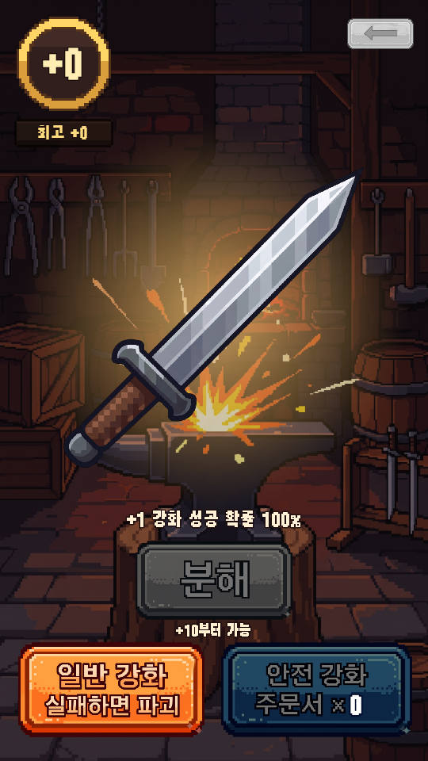
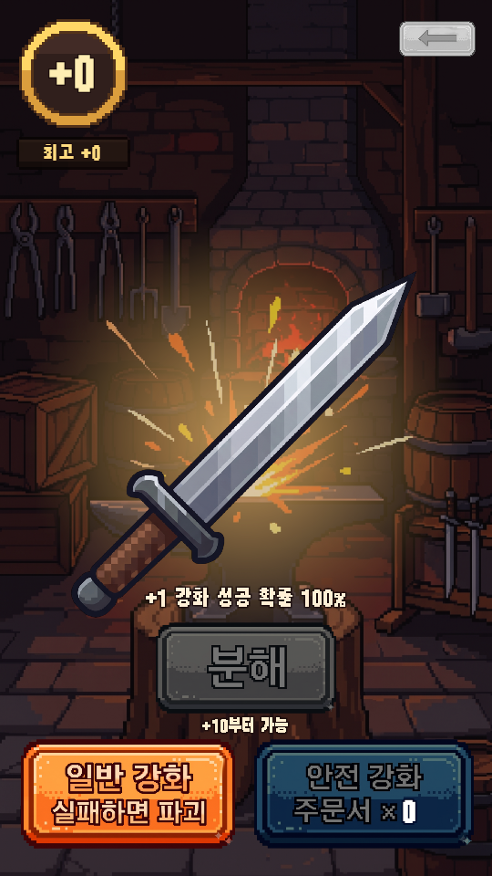
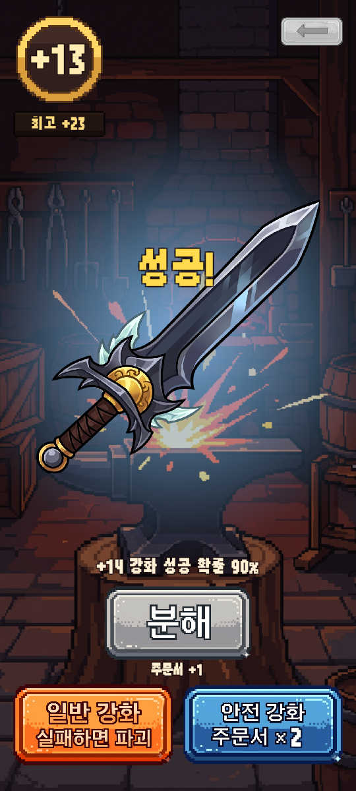
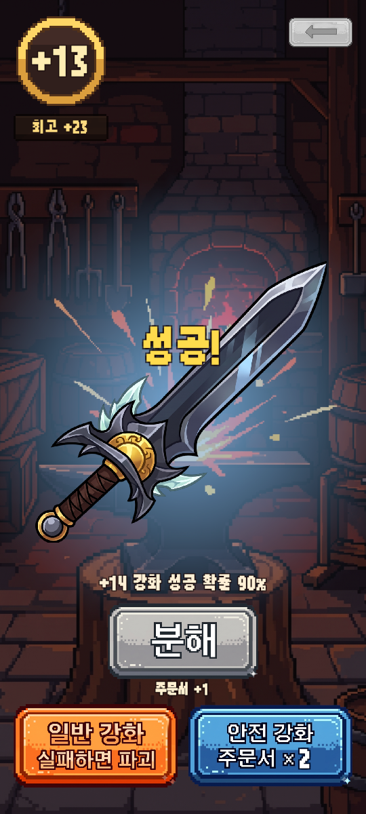
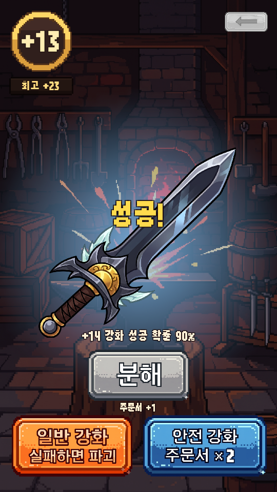
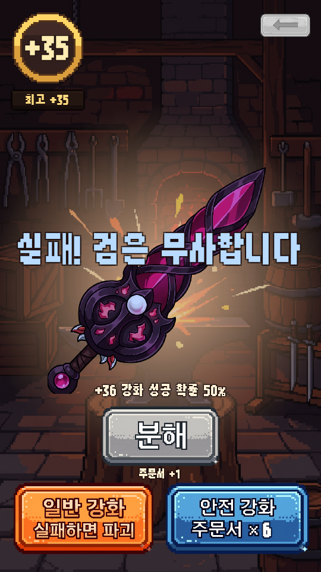
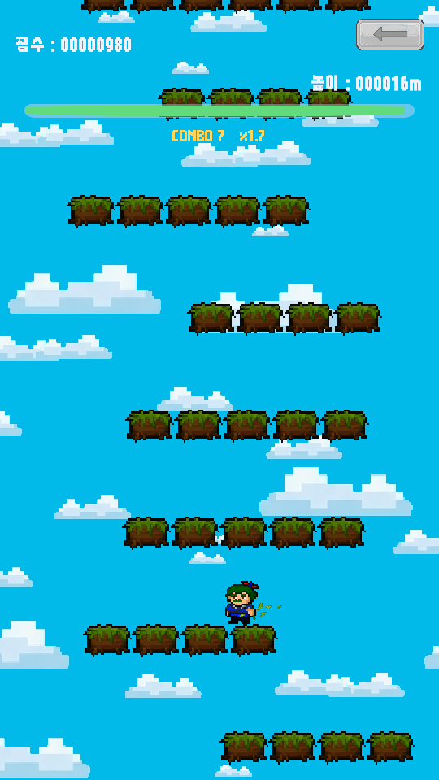
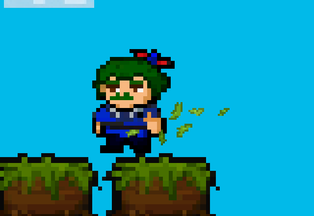
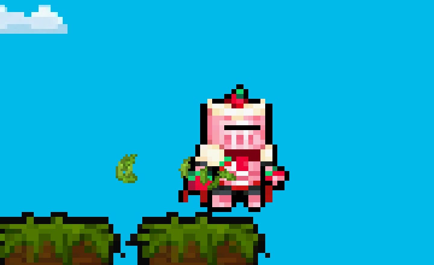

<title>검 가운데 · 효과음 반영</title>
<style>
:root{--bg:#f6f4ef;--card:#fff;--ink:#23201b;--sub:#6b655b;--line:#e3ded3;--ok:#15803d;--warn:#b45309;--chip:#f1ede4}
@media (prefers-color-scheme:dark){:root:not([data-theme="light"]){--bg:#1b1a17;--card:#25231f;--ink:#ece8df;--sub:#a59f93;--line:#3a372f;--ok:#4ade80;--warn:#fbbf24;--chip:#302d27}}
:root[data-theme="dark"]{--bg:#1b1a17;--card:#25231f;--ink:#ece8df;--sub:#a59f93;--line:#3a372f;--ok:#4ade80;--warn:#fbbf24;--chip:#302d27}
body{background:var(--bg);color:var(--ink);font:15px/1.65 system-ui,"Malgun Gothic",sans-serif;padding-inline:16px;padding-block:28px 60px}
main{max-width:980px;margin:0 auto}
h1{font-size:26px;margin:0 0 4px}
h2{font-size:19px;margin:38px 0 10px;padding-bottom:6px;border-bottom:2px solid var(--line)}
p.lead{color:var(--sub);margin:0 0 18px}
.box{background:var(--card);border:1px solid var(--line);border-radius:10px;padding:14px 18px;margin:14px 0}
.box ul,.box ol{margin:4px 0;padding-left:20px}
.wrap{overflow-x:auto;background:var(--card);border:1px solid var(--line);border-radius:10px}
table{border-collapse:collapse;width:100%;min-width:640px}
th,td{text-align:left;vertical-align:top;padding:8px 12px;border-bottom:1px solid var(--line)}
th{font-size:13px;color:var(--sub);font-weight:600;background:var(--chip)}
tr:last-child td{border-bottom:0}
code{background:var(--chip);padding:1px 5px;border-radius:4px;font-size:13px}
.shots{display:grid;grid-template-columns:repeat(auto-fit,minmax(200px,1fr));gap:14px;margin:12px 0}
figure{margin:0;background:var(--card);border:1px solid var(--line);border-radius:10px;padding:8px}
figure img{width:100%;border-radius:6px;display:block}
figcaption{font-size:13px;color:var(--sub);padding:6px 2px 0}
.ok{color:var(--ok);font-weight:700}.warn{color:var(--warn);font-weight:700}
.sum{display:flex;flex-wrap:wrap;gap:10px;margin:12px 0}
.sum div{background:var(--card);border:1px solid var(--line);border-radius:10px;padding:10px 14px;flex:1 1 180px}
.sum b{font-size:20px;display:block}
small{color:var(--sub)}
</style>

<main>
<h1>검 가운데 · 효과음 반영</h1>
<p class="lead">심심할 때 하는 게임 · 2026-09-14 · 요청: "Jump.wav 붙이기 / 검 강화의 검을 최대한 가운데로 / 추가한 사운드 적용"</p>

<div class="sum">
  <div><b class="ok">효과음 15개 연결</b><small>Sound 폴더에 넣어 주신 파일 (Jump.wav 포함 · 콤보 소리는 요청으로 뺌)</small></div>
  <div><b class="ok">검 = 화면 한가운데</b><small>예전엔 가운데보다 160px 위 · 그림마다 치우침도 보정</small></div>
  <div><b class="ok">배치 검증 전부 통과</b><small>자체 점검 55 · 검 강화 25 · 플레이테스트 2 · 캡처</small></div>
  <div><b class="warn">귀로 듣는 확인은 아직</b><small>배치 모드로는 소리를 들을 수 없어요 — 6절</small></div>
</div>

<h2>1. 검 위치 — 전 / 후</h2>
<div class="shots">
  <figure><figcaption><b>전</b> · 9:16 — 검이 위로 치우침</figcaption></figure>
  <figure><figcaption><b>후</b> · 9:16 — 화면 한가운데</figcaption></figure>
  <figure><figcaption><b>전</b> · 20:9 폰</figcaption></figure>
  <figure><figcaption><b>후</b> · 20:9 폰 — 비율이 달라도 가운데</figcaption></figure>
</div>
<div class="box">
<ol>
<li><b>검 칸을 화면 한가운데로</b> — 검 칸의 아래·위 여백이 660 / 340 이라 칸의 가운데가 화면 가운데보다 <b>160px 위</b>(1080x1920 기준)였어요.
  여백을 <b>580 / 580</b> 으로 같게 해서 폰 비율과 상관없이 한가운데에 오게 했어요. 검 크기(760)는 그대로예요.</li>
<li><b>그림마다 치우친 만큼 보정</b> — 대각선 검은 손잡이·날밑이 한쪽에 몰려 있어서, 그림 한가운데에 놓아도 눈에는 한쪽으로 쏠려 보여요.
  씬을 구울 때 그림마다 <b>검이 실제로 그려진 무게 중심</b>을 재서 그만큼 반대로 옮겨 그리게 했어요.
  강화 연출(커짐·흔들림)도 그 가운데를 기준으로 움직여요.</li>
</ol>
<p><small>가장 많이 치우친 그림은 Sword_16 · Sword_14 (오른쪽으로 약 5%, 760px 칸에서 약 37px). 검 그림을 갈아 끼우면 Build All Scenes 때 알아서 다시 잽니다.
강화 확률 글자와는 겹치지 않는 것을 캡처로 확인했어요.</small></p>
</div>
<div class="shots">
  <figure><figcaption>후 · 강화 성공 (결과 글자 위치)</figcaption></figure>
  <figure><figcaption>후 · 높은 강화 수치의 다른 그림</figcaption></figure>
</div>

<h2>2. 효과음 — 어디서 무엇이 나나</h2>
<div class="wrap"><table>
<tr><th>게임</th><th>파일</th><th>나는 때</th></tr>
<tr><td>공통</td><td><code>Click.wav</code></td><td>모든 버튼 (09-14 에 새로 넣으신 파일로 바뀜)</td></tr>
<tr><td>공통</td><td><code>GameEnter.wav</code></td><td>타이틀 START · 로비에서 게임 칸 누를 때 — <b>이 두 곳만 딸깍 대신</b></td></tr>
<tr><td>공통</td><td><code>GameOver.wav</code></td><td>활쏘기 게임 오버</td></tr>
<tr><td>공통</td><td><code>NewRecord.wav</code></td><td>최고 점수를 넘었을 때 — 점프점프는 끝나는 소리 <b>뒤에 이어서</b>, 활쏘기는 GameOver <b>대신</b>.
  <br><small>처음 한 판(기록 0)은 무엇을 해도 기록이라 울리지 않아요.</small></td></tr>
<tr><td>점프점프</td><td><code>Jump.wav</code></td><td>터치해서 점프할 때</td></tr>
<tr><td>점프점프</td><td><code>Jump_Land.wav</code></td><td>새 칸에 착지할 때</td></tr>
<tr><td>점프점프</td><td><s><code>Jump_Combo.wav</code></s></td><td><b>같은 날 요청으로 뺐어요</b> (파일은 Sound 폴더에 그대로 두었고, 이제 부르는 곳이 없어요)</td></tr>
<tr><td>점프점프</td><td><code>Jump_Fall.wav</code></td><td>떨어져서 끝날 때</td></tr>
<tr><td>점프점프</td><td><code>Jump_TimeUp.wav</code></td><td>시간이 다 돼서 끝날 때</td></tr>
<tr><td>활쏘기</td><td><code>Archery_Shoot.wav</code></td><td>화살 발사</td></tr>
<tr><td>활쏘기</td><td><code>Archery_Hit.wav</code></td><td>과녁 명중</td></tr>
<tr><td>활쏘기</td><td><code>Archery_Bullseye.mp3</code></td><td>한가운데 5점 — Hit 와 겹쳐서</td></tr>
<tr><td>검 강화</td><td><code>Enchant_Hammer.wav</code></td><td>강화 버튼을 누르고 결과가 나오기 전 0.6초 동안 <b>2번</b> "깡 깡" (처음 3번 → 요청으로 2번)</td></tr>
<tr><td>검 강화</td><td><code>Enchant_Success.wav</code></td><td>강화 성공</td></tr>
<tr><td>검 강화</td><td><code>Enchant_SafeFail.ogg</code></td><td>안전 강화 실패</td></tr>
<tr><td>검 강화</td><td><code>Enchant_Destroy.wav</code></td><td>검 파괴</td></tr>
<tr><td>검 강화</td><td><code>Enchant_Melt.wav</code></td><td>분해</td></tr>
</table></div>

<h2>2-1. 점프점프 착지 풀잎 이펙트 (같은 날 추가 요청)</h2>
<div class="shots">
  <figure><figcaption>착지 0.1초 뒤 — 발밑에서 풀잎 (이 캡처는 6장일 때)</figcaption></figure>
  <figure><figcaption>같은 장면 4배 확대</figcaption></figure>
</div>
<div class="box">
<ul>
<li><b>콤보 소리를 뺐어요.</b> 착지 소리(Jump_Land)는 그대로예요.</li>
<li><b>착지할 때마다</b>(같은 칸에 다시 내려앉아도) 발밑에서 풀잎 <b>9장</b>(처음 6장 → 요청으로 1.5배)이 톡 튀었다가 빙글 돌며 떨어지고 0.35~0.6초 뒤 사라져요. 튀는 방향은 매번 무작위예요.</li>
<li>색은 발판 잔디색에 맞춘 초록 3가지, 그림은 코드가 만든 작은 픽셀 잎이에요 (<code>Art/Effects/Leaf.png</code>). 진짜 그림으로 덮어쓰셔도 크기는 그대로 맞춰져요.</li>
<li><b>양 · 크기 · 튀는 높이 조절</b> — <code>JumpJump/GameConfig.asset</code> 의 "착지 풀잎 이펙트":
  Leaf Count(개수, 0 이면 끔) · Leaf Size(크기) · Leaf Speed Y Min/Max(튀는 높이) · Leaf Spread(퍼지는 폭) · Leaf Life(사라지는 시간) · Leaf Colors(색).</li>
<li>검증: 씬 굽기 오류 0 · 자체 점검 55건 통과 (소리 점검은 16개로 줄어 통과) · 캡처에서 풀잎 6장 확인 ·
  점프점프 자동 플레이 81칸 / 107칸 (판마다 달라요 — 풀잎은 게임 규칙에 손대지 않아요).</li>
</ul>
</div>

<h2>2-2. 활쏘기 발사 간격 · 풀잎 양 · 망치질 횟수 (같은 날 추가 요청)</h2>
<div class="box">
<ul>
<li><b>활쏘기</b> — 한 발 쏜 뒤 <b>0.5초</b> 동안은 다음 화살이 나가지 않아요 (예전 0.12초 → 0.3초 → 요청으로 0.5초). 판을 시작할 때는 기다리지 않고 첫 발이 바로 나가요.
  값은 <code>Archery/ArcheryConfig.asset</code> 의 <b>Fire Cooldown</b>.</li>
<li><b>풀잎</b> — 착지 한 번에 6장 → <b>9장</b>. 값은 <code>JumpJump/GameConfig.asset</code> 의 <b>Leaf Count</b>.</li>
<li><b>검 강화 망치질</b> — 3번 → <b>2번</b> ("깡 깡"). 값은 <code>Enchant/EnchantConfig.asset</code> 의 <b>Hammer Hits</b>.</li>
</ul>
<div class="shots">
  <figure><figcaption>풀잎 9장 — 착지 0.1초 뒤 4배 확대 (막 튀어 올라 캐릭터 앞에 몰린 순간, 곧 옆으로 흩어져요)</figcaption></figure>
</div>
<ul>
<li><span class="ok">검증 끝 (에디터를 닫은 뒤)</span> — 씬 굽기 오류 0 · 자체 점검 55건 · 검 강화 점검 25건 · 캡처 전부 통과.
  <br>활쏘기 조준 봇은 115발 명중(99.1%)으로 그대로예요. 과녁이 맞을 때만 쏘느라 원래 0.5초보다 느리게 쏘기 때문이에요.
  마구 쏘는 "빗맞히는 봇"은 30초에 끝낸 판이 <b>7판 → 5판</b>으로 줄었어요. 발사 간격이 실제로 늘어난 거예요.
  <br>점프점프는 캡처에 풀잎 9장 · 자동 플레이 73칸 (판마다 달라요).</li>
</ul>
</div>

<h2>3. 앞으로 소리를 바꾸거나 넣을 때</h2>
<div class="box">
<ul>
<li><b>바꾸기</b> — <code>D:\00.JumpJump\Sound\</code> 의 같은 이름 파일을 덮어쓰고 <b>Tools &gt; Arcade &gt; Build All Scenes</b>. 코드는 안 건드려요.
  wav / ogg / mp3 어느 것이든 되고, 확장자를 바꿔도(Jump.wav → Jump.ogg) 옛 파일은 알아서 지워요.</li>
<li><b>크기</b> — 파일 자체 음량을 맞추는 게 가장 좋아요. 전체를 줄이려면 <code>Shell/Resources/ArcadeConfig.asset</code> 의 <b>Sfx Volume</b>(전체) / <b>Click Volume</b>(딸깍만).</li>
<li><b>숫자로 조절되는 것</b> — 망치질 횟수: <code>EnchantConfig.asset</code> 의 Hammer Hits.</li>
<li><b>새 소리</b>(2순위의 빗나감 · 째깍 · 새 검 · 거절음, 배경음) — 파일을 <code>Sound\</code> 에 넣어 주시면 부르는 곳은 제가 붙여요.</li>
</ul>
</div>

<h2>4. 한 일 (코드)</h2>
<div class="box">
<ul>
<li><b>소리 담당 <code>Arcade.Sfx</code></b> 새로 — 소리 이름 16개(딸깍 포함), 겹쳐서 최대 8개까지 동시에. 버튼 딸깍 소리도 이제 여기서 나요.
  플레이 모드가 아니면 아무것도 하지 않아서 <b>배치 플레이테스트·미리보기는 예전과 똑같이 돌아요.</b></li>
<li><b>가져오기</b> — Build All 이 작업 폴더의 <code>Sound\</code> 를 통째로 훑어서 이름 그대로 프로젝트에 넣어요 (예전엔 Click.wav 한 개만 이름을 적어 두는 방식).</li>
<li>세 게임에서 위 2절의 순간마다 한 줄씩. 타이틀·로비는 게임 들어가기 소리.</li>
<li>검 강화 — 검 칸 여백 · 그림마다 무게 중심 재기 · 그만큼 옮겨 그리기.</li>
<li>자체 점검 +1 — "코드가 부르는 소리 16개가 전부 들어 있다" (파일 이름이 틀리면 여기서 걸려요).</li>
</ul>
</div>

<h2>5. 검증</h2>
<div class="wrap"><table>
<tr><th>항목</th><th>결과</th></tr>
<tr><td>Build All Scenes (컴파일 + 씬 5장 + 소리 17개 가져오기)</td><td class="ok">오류 0</td></tr>
<tr><td>자체 점검 (랭킹 · 광고 · 별명 · 클릭 소리 · 효과음 …)</td><td class="ok">55건 전부 통과</td></tr>
<tr><td>검 강화 점검 (규칙 · 확률 · 저장 · 랭킹 신호)</td><td class="ok">25건 전부 통과</td></tr>
<tr><td>검 강화 캡처 7장 · 타이틀/로비 캡처</td><td class="ok">생성 · 검 위치 확인</td></tr>
<tr><td>점프점프 자동 플레이 120초</td><td class="ok">132칸 (판마다 다름)</td></tr>
<tr><td>활쏘기 조준 봇 120초 / 빗맞히는 봇 30초</td><td class="ok">115발 명중 99.1% / 7판 전부 정상 종료</td></tr>
</table></div>
<p><small>09-13 에 Unity 가 켜져 있어 못 돌렸던 점검까지 이번에 같이 끝났어요. 활쏘기 명중 수가 예전(87발)보다 많은 건 09-13 에 바꾸신 archery.csv(화살 속도 9) 때문이에요.</small></p>

<h2>6. 확인 부탁드려요</h2>
<div class="box">
<ol>
<li><b>소리가 실제로 들리는지 · 크기가 서로 맞는지</b> — 배치 모드로는 소리를 들을 수 없어서, Build All Scenes → Play 로 한 번씩 들어 봐 주세요.
  특히 <b>검 강화 망치질 2번</b>이 괜찮은지. (점프점프 콤보 소리는 뺐어요)</li>
<li><b>검 위치</b>가 마음에 드는지 (1절 캡처).</li>
<li>남아 있는 것 — 검 그림 <b>Sword_17~19 가 아직 없어서</b> +41 이상은 임시 검이에요 / 폰 APK 는 09-11 것이라 09-13 · 09-14 작업이 하나도 안 들어 있어요 (다시 구울까요?).</li>
</ol>
</div>
</main>
